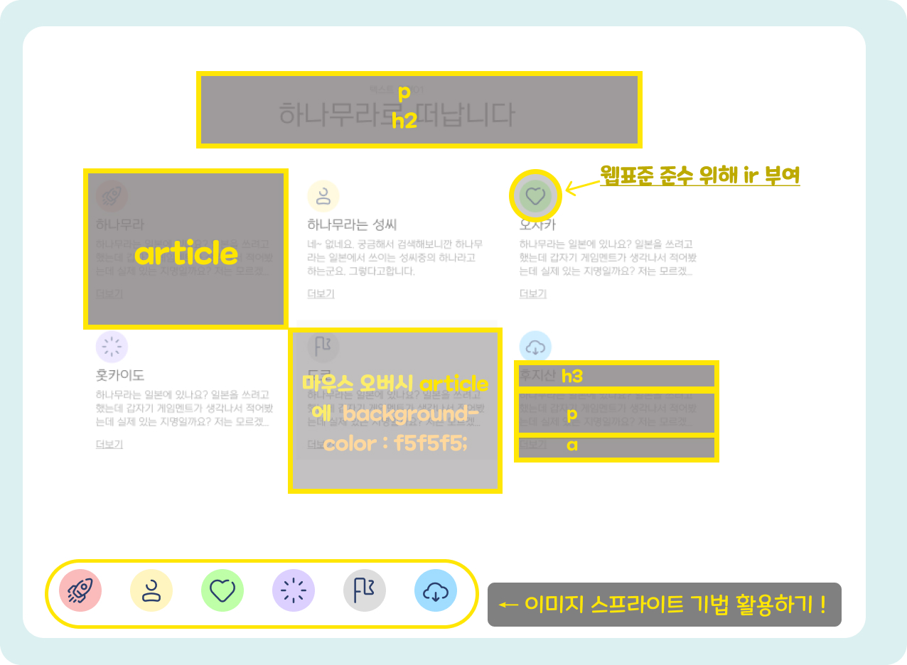

사이트 만들기 _ 텍스트 유형01
이번 시간에는 텍스트 유형을 만들어 보겠습니다. 6개의 섹션으로 구성되어 있으며, 아이콘은 div태그에 background를 이용했지만 웹표준을 준수하기 위해 ir효과를 입힐 예정입니다.
■ 그림으로 미리보기🎨
■ 핵심내용✍
- html 코드 -
<div class="icon"><span class="ir">icon</span></div>
- css 코드 -
.ir{
overflow: hidden;
position: absolute;
width: 0;
height: 0;
line-height: 0;
text-indent: -9999px;
}
<div class="icon"><span class="ir">icon</span></div>
- css 코드 -
.ir{
overflow: hidden;
position: absolute;
width: 0;
height: 0;
line-height: 0;
text-indent: -9999px;
}
시각적으로는 아이콘이 표시되지만 웹표준을 준수하기 위해서는 의미없는 div태그에 이미지를 입혀서는 안되겠죠?
그래서 span태그에 그림에 대한 설명을 적어주고 ir효과를 주어서 시각적으로 텍스트는 가리지만 리더기가 읽을 수 있도록 유도합니다.
background-position: 0 0;
'이미지 스프라이트'를 기억하시나요? 아이콘은 svg파일로 묶어서 만든 뒤 이미지스프라이트 기법을 활용해서 적용해봤습니다.
(기억안나시면 이 글을 참고해주세요)
CSS 속성
/* fonts */
@import url('https://webfontworld.github.io/NexonLv1Gothic/NexonLv1Gothic.css');
.nexon {
font-family: "NexonLv1Gothic";
font-weight: 400;
}
/* 리셋 */
*{
margin: 0;
padding: 0;
}
a{
text-decoration: none;
color: #000;
}
img {
width: 100%;
}
h1, h2, h3, h4, h5, h6 {
font-weight: normal;
}
/* common */
.container {
width: 1160px;
padding: 0 20px;
margin: 0 auto;
min-width: 1160px;
}
.section {
padding: 120px 0;
}
.section > h2 {
font-size: 50px;
line-height: 1;
text-align: center;
margin-bottom: 70px;
}
.section > p {
font-size: 16px;
font-weight: 300;
color: #666;
text-align: center;
margin-bottom: 10px;
text-decoration: underline;
}
/* textType */
.text__inner{
display: flex;
flex-wrap: wrap;
justify-content: space-between;
}
.text__inner article{
width: 373px;
height: 260px;
box-sizing: border-box;
padding: 20px;
}
.text__inner article:hover {
background-color: #f5f5f5;
border-radius: 30px;
}
.text__inner article:nth-child(1),
.text__inner article:nth-child(2),
.text__inner article:nth-child(3) {
margin-bottom: 20px;
}
.icon{
width: 60px;
height: 60px;
background: url(img/text_type01.svg) no-repeat;
border-radius: 50%;
margin-bottom: 10px;
}
.text__inner article:nth-child(1) .icon{background-position: 0 0;}
.text__inner article:nth-child(2) .icon{background-position: -100px 0;}
.text__inner article:nth-child(3) .icon{background-position: -200px 0;}
.text__inner article:nth-child(4) .icon{background-position: -300px 0;}
.text__inner article:nth-child(5) .icon{background-position: -400px 0;}
.text__inner article:nth-child(6) .icon{background-position: -500px 0;}
.text__inner h3 {
margin-bottom: 20px;
}
.text__inner p {
font-size: 18px;
line-height: 1.4;
margin-bottom: 20px;
color: #666;
overflow: hidden;
text-overflow: ellipsis;
display: -webkit-box;
-webkit-line-clamp: 3;
-webkit-box-orient: vertical;
}
.text__inner a {
text-decoration: underline;
}
.ir{
overflow: hidden;
position: absolute;
width: 0;
height: 0;
line-height: 0;
text-indent: -9999px;
}
HTML 속성
<section id="textType01" class="text__wrap nexon section">
<p>텍스트 유형01</p>
<h2>하나무라로 떠납니다</h2>
<div class="text__inner container">
<article>
<div class="icon"><span class="ir">icon</span></div>
<h3>하나무라</h3>
<p>하나무라는 일본에 있나요? 일본을 쓰려고 했는데 갑자기 게임멘트가 생각나서 적어봤는데 실제 있는 지명일까요? 저는 모르겠군요궁요궁예</p>
<a href="#">더보기</a>
</article>
<article>
<div class="icon"><span class="ir">icon</span></div>
<h3>하나무라는 성씨</h3>
<p>네~ 없네요. 궁금해서 검색해보니깐 하나무라는 일본에서 쓰이는 성씨중의 하나라고 하는군요. 그렇다고합니다. </p>
<a href="#">더보기</a>
</article>
<article>
<div class="icon"><span class="ir">icon</span></div>
<h3>오사카</h3>
<p>하나무라는 일본에 있나요? 일본을 쓰려고 했는데 갑자기 게임멘트가 생각나서 적어봤는데 실제 있는 지명일까요? 저는 모르겠군요궁요궁예</p>
<a href="#">더보기</a>
</article>
<article>
<div class="icon"><span class="ir">icon</span></div>
<h3>홋카이도</h3>
<p>하나무라는 일본에 있나요? 일본을 쓰려고 했는데 갑자기 게임멘트가 생각나서 적어봤는데 실제 있는 지명일까요? 저는 모르겠군요궁요궁예</p>
<a href="#">더보기</a>
</article>
<article>
<div class="icon"><span class="ir">icon</span></div>
<h3>도쿄</h3>
<p>하나무라는 일본에 있나요? 일본을 쓰려고 했는데 갑자기 게임멘트가 생각나서 적어봤는데 실제 있는 지명일까요? 저는 모르겠군요궁요궁예</p>
<a href="#">더보기</a>
</article>
<article>
<div class="icon"><span class="ir">icon</span></div>
<h3>후지산</h3>
<p>하나무라는 일본에 있나요? 일본을 쓰려고 했는데 갑자기 게임멘트가 생각나서 적어봤는데 실제 있는 지명일까요? 저는 모르겠군요궁요궁예</p>
<a href="#">더보기</a>
</article>
</div>
</section>